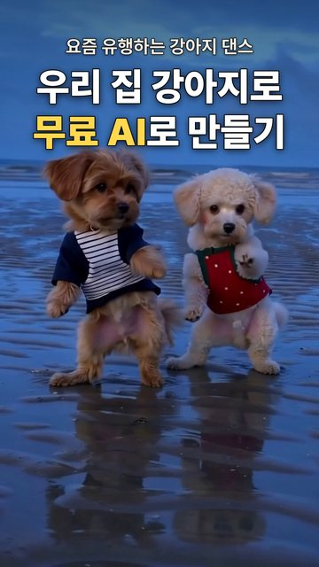

요즘 유행하는 AI 강아지 해변 댄스를, 우리 집 강아지 두 마리 사진으로 무료 AI 두 개를 써서 저희 PC에서 만들었습니다. 비용은 0원입니다.
① 움직임 참고 영상 정리(춤 영상에서 빠질 강아지는 빈 해변 사진으로 덮어 지우고, 두 마리 중심으로 확대) ② 사진 AI로 첫 장면·중간 장면 속 강아지를 우리 강아지로 바꾸기(그 장면 + 우리 강아지 사진을 참고 사진으로, 첫 장면은 한 마리만 보이는 장면으로) ③ 영상 AI에 바뀐 첫 장면과 움직임 참고 영상을 넣고 다시 그리기(다시 그리는 강도 0.9, 704x1248, 6.7초씩 두 구간, 중간 장면은 안내 사진으로) ④ 털색이 점점 바래면 참고 영상 속 흰 털을 미리 우리 강아지 털색으로 칠해 두고 다시 돌리기 ⑤ 두 구간을 이어 붙이면 12초 저희 PC 실측(그래픽카드 8GB): 사진 AI 장당 9~19초(키 장면 8장 + 빈 해변 5장), 영상 AI 한 구간 120~180초(6번 돌림, 최종 두 구간 270초) → 다시 뽑은 것까지 약 17분 사진 AI = FLUX.2 klein 4B, 영상 AI = LTX-2.5(영상을 넣어 영상으로), 둘 다 내 PC에서 무료
Image 1 is a photo of small dogs standing on their hind legs on a wet sand beach at blue dusk. Change only the dogs, keep everything else identical. The dog in the navy jacket with white stripes becomes the dog from image 2: a small golden-ginger (light reddish apricot, bright warm orange-tan, not dark brown) long-haired Maltipoo and Yorkie mix with long, silky, slightly wavy fluffy fur, long fluffy floppy ears covered in long hair, a fluffy round face, dark round eyes, a small black nose and a plumed tail. Her belly and legs are fully covered in fluffy ginger fur. Same fur color, fur texture and face as the dog in image 2. It keeps wearing the same navy jacket with white stripes. Exactly one dog in the picture. Each dog keeps exactly the same pose, position and size as in image 1. Keep exactly the same beach, wet sand ripples, reflections, sky, camera angle, framing and soft blue evening light as image 1. Photorealistic photo, natural fur, sharp focus. No text.
Image 1 is a photo of small dogs standing on their hind legs on a wet sand beach at blue dusk. Change only the dogs, keep everything else identical. The left dog in the navy jacket with white stripes becomes the dog from image 2: a small golden-ginger (light reddish apricot, bright warm orange-tan, not dark brown) long-haired Maltipoo and Yorkie mix with long, silky, slightly wavy fluffy fur, long fluffy floppy ears covered in long hair, a fluffy round face, dark round eyes, a small black nose and a plumed tail. Her belly and legs are fully covered in fluffy ginger fur. Same fur color, fur texture and face as the dog in image 2. It keeps wearing the same navy jacket with white stripes. The right dog in the red vest with white dots becomes the dog from image 3: a small light apricot-cream (pale peach) curly-coated toy poodle with tight soft curls all over the body, soft curly floppy ears, dark round eyes and a small black nose. Her belly and legs are fully covered in soft cream curls. Same fur color, curly fur and face as the dog in image 3. It keeps wearing the same red vest with white dots and green trim. Exactly two dogs in the picture. Each dog keeps exactly the same pose, position and size as in image 1. Keep exactly the same beach, wet sand ripples, reflections, sky, camera angle, framing and soft blue evening light as image 1. Photorealistic photo, natural fur, sharp focus. No text. (강아지 설명 자리에는 우리 강아지 털색·털결·귀·얼굴을 영어로 자세히 적음 — 예: 'a small golden-ginger long-haired Maltipoo …', 'a small pale apricot-cream curly-coated toy poodle …')
A fixed smartphone camera on a tripod films a wide wet sand beach at blue-hour dusk: a calm sea on the horizon, a cloudy blue evening sky, and shallow water on the rippled sand mirroring everything in soft blue light. On the beach, a small golden-ginger long-haired Maltipoo dog with long silky fluffy fur, long fluffy floppy ears, a fluffy round face, dark round eyes and a black nose, wearing a navy jacket with white stripes, stands upright on her hind legs and dances cutely by herself, waving and swinging her front paws to the music. Then a second dog, a small pale apricot-cream curly-coated toy poodle with soft curls all over, curly floppy ears, dark round eyes and a black nose, wearing a red vest with small white dots, comes out from behind her on the right, walks up to her and stands beside her, and the two dogs dance together side by side on their hind legs, moving their paws in sync. There are only these two dogs on the beach. The left dog stays golden ginger and the right dog stays pale cream. Their reflections shimmer on the wet sand. Photorealistic footage, natural fluffy fur, smooth natural motion. Audio: gentle ocean waves, no speech, no music.
A fixed smartphone camera on a tripod films a wide wet sand beach at blue-hour dusk: a calm sea on the horizon, a cloudy blue evening sky, and shallow water on the rippled sand mirroring everything in soft blue light. Two small dogs dance together side by side on the beach, standing upright on their hind legs and moving their front paws in sync to the music. On the left, a small golden-ginger long-haired Maltipoo dog with long silky fluffy fur, long fluffy floppy ears, a fluffy round face, dark round eyes and a black nose, wearing a navy jacket with white stripes. On the right, a small pale apricot-cream curly-coated toy poodle with soft curls all over, curly floppy ears, dark round eyes and a black nose, wearing a red vest with small white dots. There are only these two dogs on the beach. The left dog stays golden ginger and the right dog stays pale cream. Their reflections shimmer on the wet sand. Photorealistic footage, natural fluffy fur, smooth natural motion. Audio: gentle ocean waves, no speech, no music. 영상 제외어(negative): third dog, extra dog, extra legs, extra paws, deformed, blurry, cartoon, 3d render, text, watermark, subtitles
티아라(T-ARA) - DAY BY DAY (유행 영상과 같은 구간부터 끝까지)
※ 영상 속 진행자는 AI로 만든 가상 인물이며, 진행자 목소리도 AI로 생성했습니다. 강아지 영상은 실제 강아지 사진을 바탕으로 AI가 만든 영상입니다.